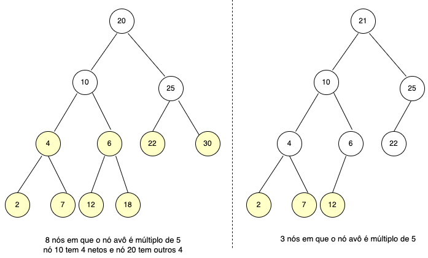

[ED300] Hiérarquias de Nós
Neste problema deverá submeter um programa completo. Use o esqueleto de código dado que tem a estrutura necessária para representar uma versão de árvores de inteiros. Deve acrescentar os métodos que são pedidos e fazer escrever o output conforme solicitado. O input está considerado já no esqueleto de código dado.
Código base
 O esqueleto de código base a usar inclui uma classe
O esqueleto de código base a usar inclui uma classe
BTNode genérica e uma
classe BTree específica de uma árvore de inteiros. Preserve a estrutura
dada, acrescente os métodos necessários, compile e teste localmente e submeta o ficheiro
que tem o nome da classeque que contém o método main().
Métodos a implementar
Acrescente à classe BTree o método
solicitado, devendo depois invocar esse método a partir do
método main()):
- public int
countNodesWithGrandParentMultipleOfK(int k) (50% da
cotação)
Deve devolver o número de nós que têm um nó avô (grand-parent) que seja múltiplo dek(k > 0). O resultado será 0 se não houver nenhum nó que satisfaça a propriedade. A figura ilustra duas árvores, uma com 8 nós (sinalizados a fundo amarelo) que satisfazem a propriedade de o nó avô ser múltiplo deke outra em que apenas 3 satisfazem.

Notas
- Pode implementar métodos auxiliares, se quiser.
- Teste localmente antes de submeter. Basta fazer copy-paste do input.
- Em todos os casos de teste as árvores têm entre 1 a 100 nós.
Definição do input e output
No input aparece um primeiro valor inteiro, NC com o número de
casos a analisar. Para cada caso, é dada uma lista de valores que
caracterizam uma árvore é em preorder (a leitura está
no programa dado), seguindo-se de um valor inteiro que determina o
k.
O output deve começar por identificar numa linha o caso, seguindo-se o número de nós que têm um nó-avô que seja múltiplo do k dado.
Exemplos de input e output
Os exemplos correspondem às árvores da figura.
Input
2 20 10 4 2 N N 7 N N 6 12 N N 18 N N 25 22 N N 30 N N 5 21 10 4 2 N N 7 N N 6 12 N N N 25 22 N N N 5
Output
Case 1: Num Nodes with Grand Parente multiple of 5= 8 Case 2: Num Nodes with Grand Parente multiple of 5= 3
Nota: o valor "5" no output corresponde ao valor de "k" dado no input.
Estruturas de Dados (CC1007), DCC-FCUP